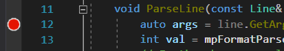

ModAPI SDK Basics: Debugging
How to debug your mods using Visual Studio.
You can compile your project by clicking F7 or the menu button Build -> Build Solution. The .dlls will be packed to the location you chose for the ModAPI launcher kit, which means that you can test them directly. You can open the game through the launcher by just pressing Ctrl + F5 or the menu button Debug -> Start without debugging.
Attaching the debugger
Visual Studio lets you debug an application that's already running by pressing Ctrl+Alt+P or the menu button Debug -> Attach to process... It will show a dialog with a list of all the active processes, you have to select SporeApp.exe and click Attach (of course, you must have Spore running to do this).
Once the debugger is attached, you can add breakpoints that will interrupt the game execution when hit. In a code file, there's a panel to the left of the line numbers; if you double click there, a breakpoint will be added that will be hit when the execution arribes to that line. For example, if I add a brekapoint to the first line of a cheat:
When you execute that cheat, the game will pause. Visual Studio will show you the values of the current variables, and lets you execute the code line to line.

Manual breakpoints
Using the Attach to process... method it's still impossible to debug certain parts of the code, such as the Initialize() method. This is because by the time you attach the debugger, that code has already been executed. There's a solution: manual breakpoints. You can add a manual breakpoint by calling the function:
ManualBreakpoint();
When that line is executed, even if the debugger is not attached, the game will pause and a dialog will appear, the Just-In-Time Debugger. If you accept, it will show you a list of the possible application with which you can debug it (select the opened instance of Visual Studio). This is a very useful feature, which you can also use to avoid attaching to process every time.